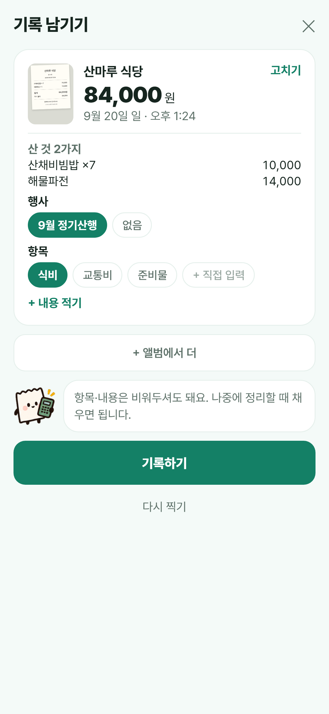
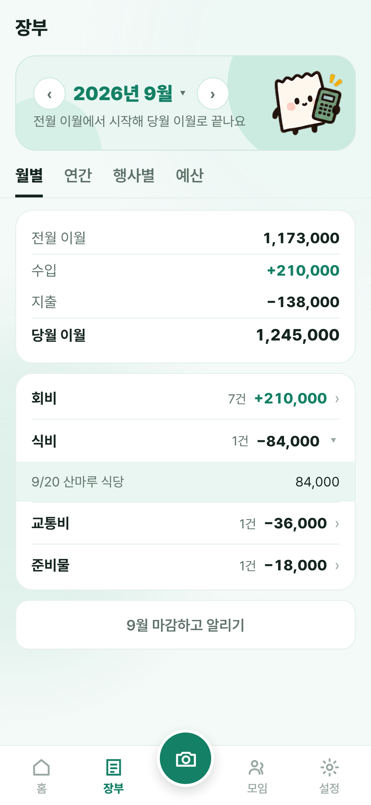
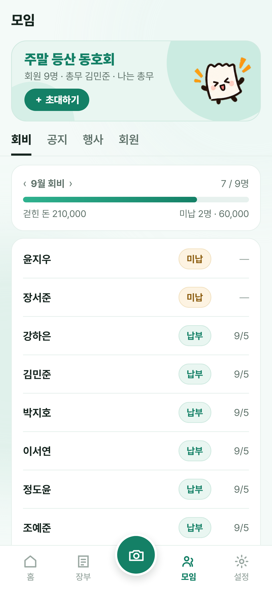
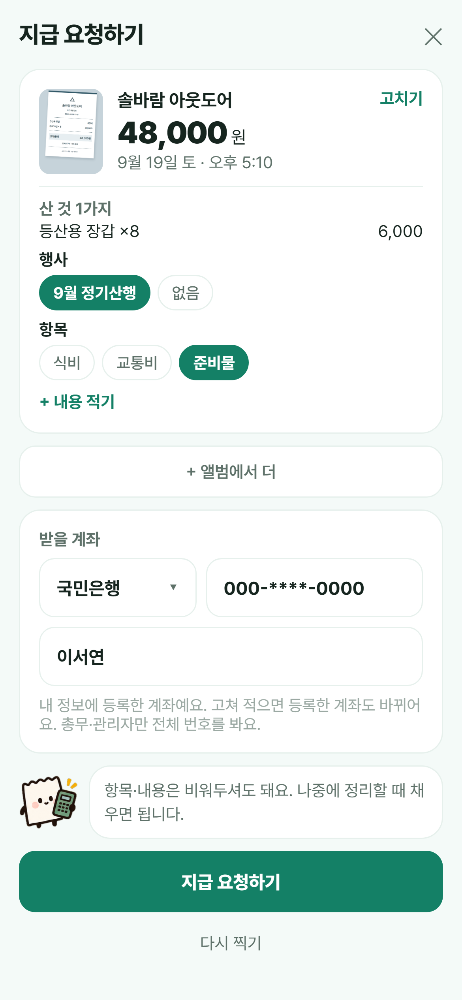
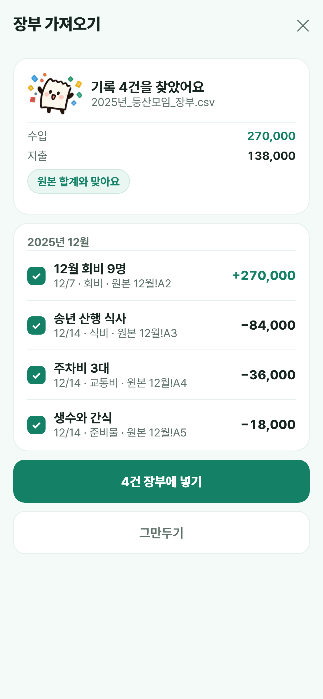
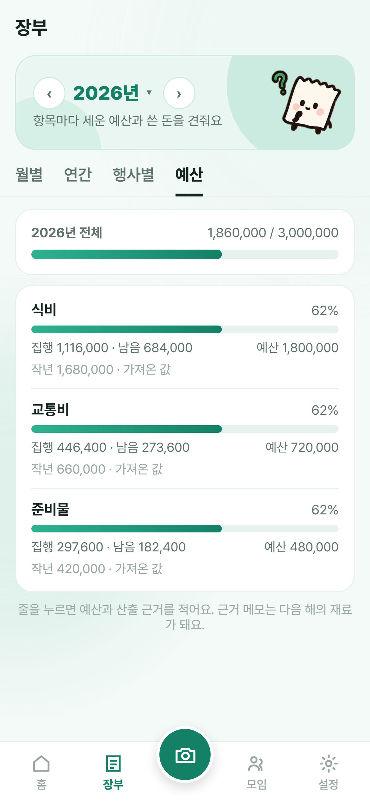
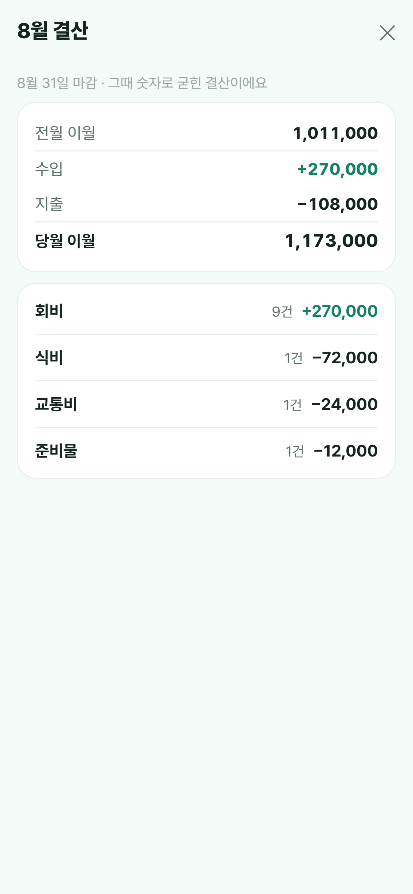
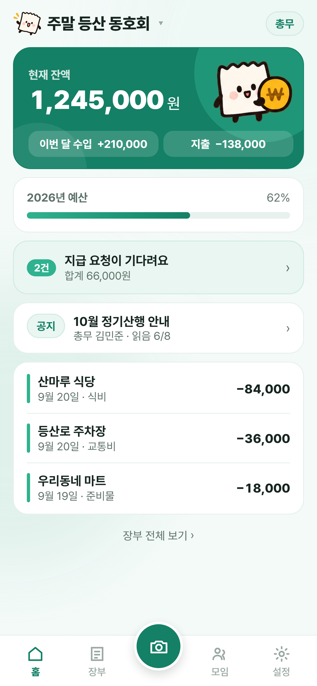

총무님
모임 돈,
한눈에
잔액 · 예산 · 처리할 일까지
총무님
영수증은
찍으면 끝
상호 · 날짜 · 금액을 읽어 적어 드려요
여러 장 한 번에(최대 10장) · 나중에 기록 · 영수증 없이 적기


총무님
회원과 함께 보는
투명한 장부
누가 언제 무엇에 썼는지 남아요
월별 · 연간 · 행사별 · 엑셀 · 결산서 PDF · 공개 장부 링크


총무님
회비 납부,
한눈에
미납 회원에게 한 사람씩 안내해요
회장 · 부총무도 관리자로


총무님
대신 쓴 돈은
청구 요청으로
영수증과 받을 계좌를 붙여 총무에게
총무가 지급완료를 누르면 장부에 저절로 적혀요


총무님
쓰던 장부로
올해 예산까지
엑셀 · CSV · PDF · 구글 시트를 가져와요
작년 집행을 채워 두고 「작년만큼」 한 번에



총무님
결산은
한 장으로
마감하면 회원 모두에게 알려요
월말 정리 모드



잔액과
이번 달 수입 · 지출들어오고 나간 돈을 한곳에서
이번 달 수입 · 지출들어오고 나간 돈을 한곳에서
올해 예산,
얼마나 썼는지사용률을 막대로 확인해요
얼마나 썼는지사용률을 막대로 확인해요
처리할 지급 요청기다리는 건수와 금액까지
공지와 읽은 사람 수

 ✦
✦